StateFlowDesign
StateFlow简介
状态
就是状态, 每个StateFlow只能处于一个状态, 状态机只会停留在某个状态, 不能停留在流转线或点上
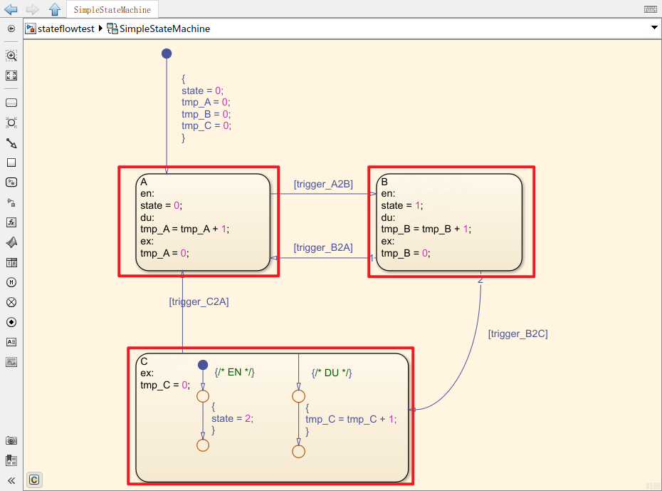
ABC为改StateFlow的三个状态
条件
状态跳转的条件, 条件满足时, 箭头激活使状态跳转
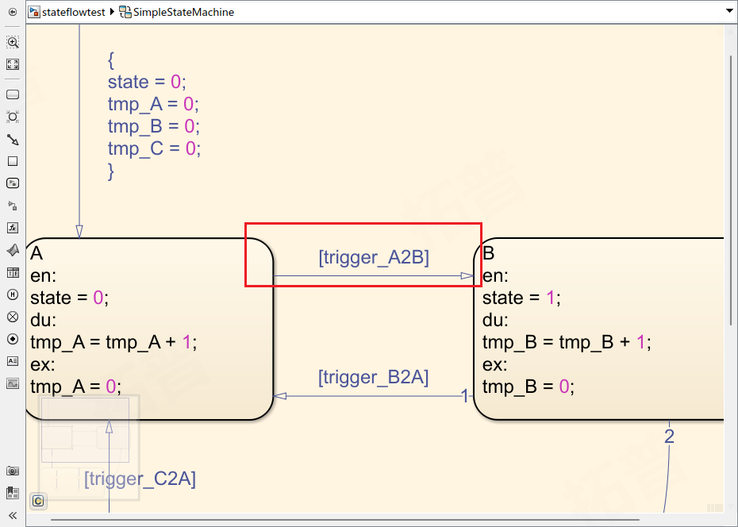
当状态处于
A时,trigger_A2B为true, 状态将会跳转到B条件指令由[]包围
执行
StateFLow中执行从起始点开始, 通过
条件判断流程图走向, 执行不同命令
命令行主要分在两个部分
- 状态流转线上的
{ }中 - 状态内的
enduex后
立即执行
流转线上的大括号内:
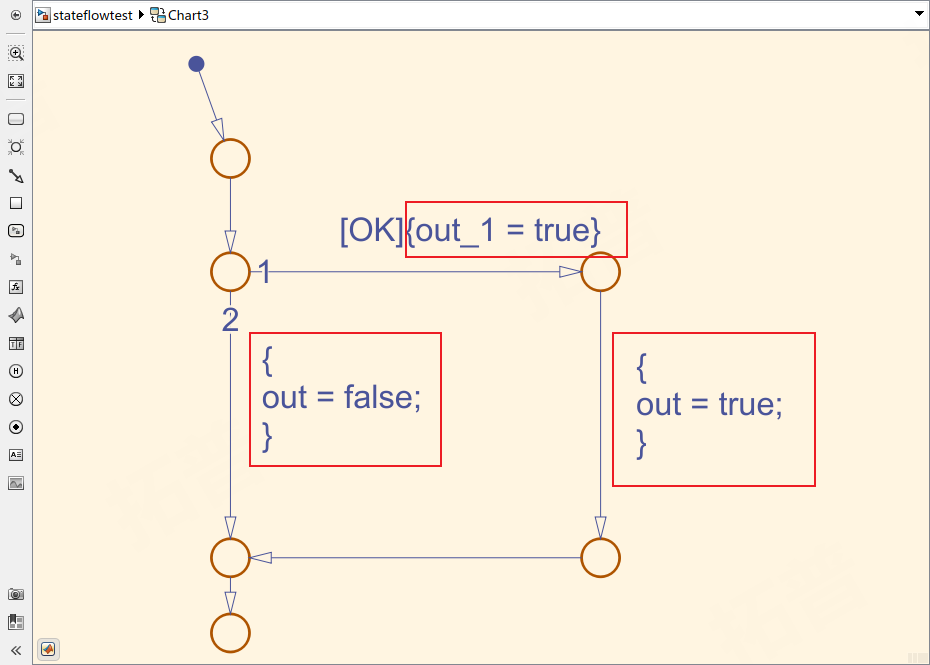
无状态的StateFLow, 从起始点一直执行到最后
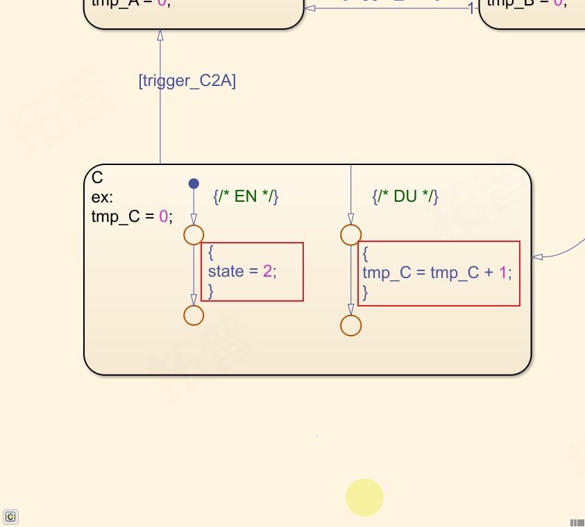
状态内部也可搭建流转线执行指令
EN
当刚刚进入某个状态的第一个周期执行en后的内容
EN的搭建方式用两种:
1) 以A状态为例
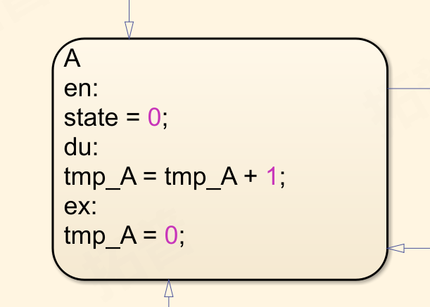
当进入该状态时, 立即执行en后的指令, 将state赋值为0
2) 以C状态为例
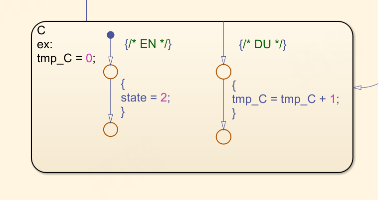
在状态中添加起始点, 效果等同于en
DU
进入某个状态的第二个周期开始, 执行du之中的内容
与EN类型, 搭建方式也有两种
1) 以A状态为例
当进入该状态后, 执行du之后的指令, 将tmp_A加一 (图示如EN中)
2) 以C状态为例
将流转线连接至状态框上, 效果等同于du(图示如EN中)
EX
当状态跳转, 要退出该状态时执行的指令
位于ex关键字之后(图示如EN中)
退出指令只能通过ex关键字知名, 无法搭建流转线
使用
enduex关键字与流转线的对比: 关键字无法执行判断语句, 仅支持简单的数值运算(可通过调用函数来实现) 使用流转线可与直观搭建判断与循环指令
StateFlow中的Function
StateFlow中可调用函数来执行复杂操作, 使页面更加简洁明了
Simulink Function
新建Simulink Function, 嵌入一个Simulink模型执行复杂计算, SimulinkFunction视为单独一层, 其拥有单独的输入输出 local变量等, 与调用其的模型仅通过输入输出参数有数据交互
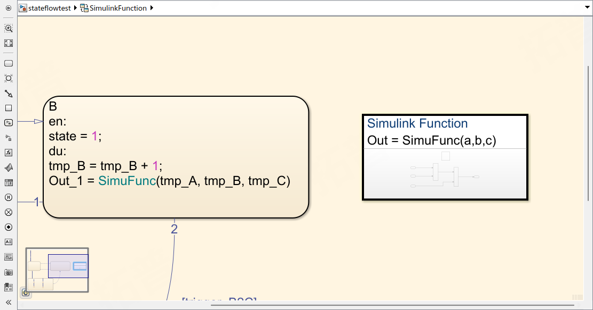
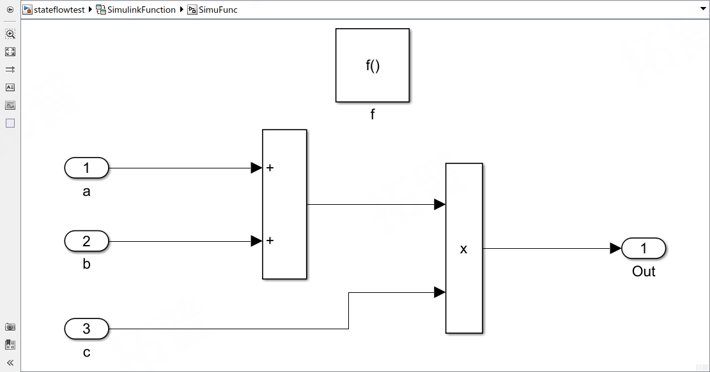
Graphic Function
GraphicFunction支持传递参数的函数形式, 同时也支持直接操作改chart内的变量
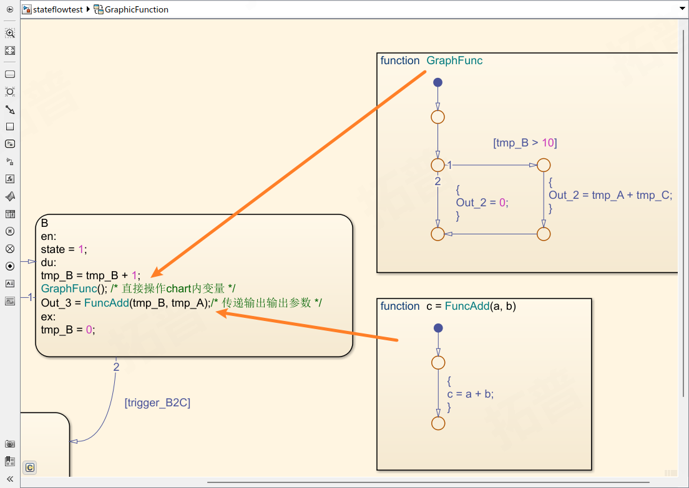
常见建模方式
基础状态机
一层状态机结构, 简单的状态跳转
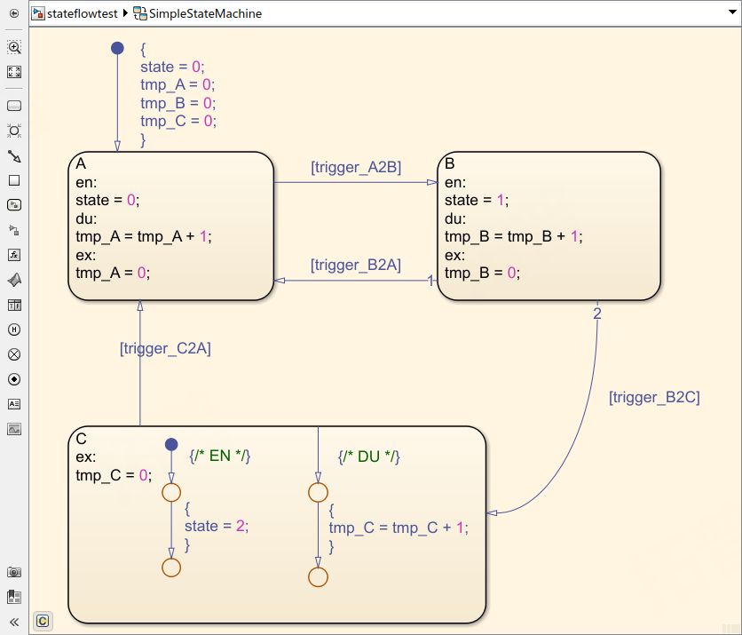
嵌套状态机
状态机内的状态机, 外层状态机优先于内层
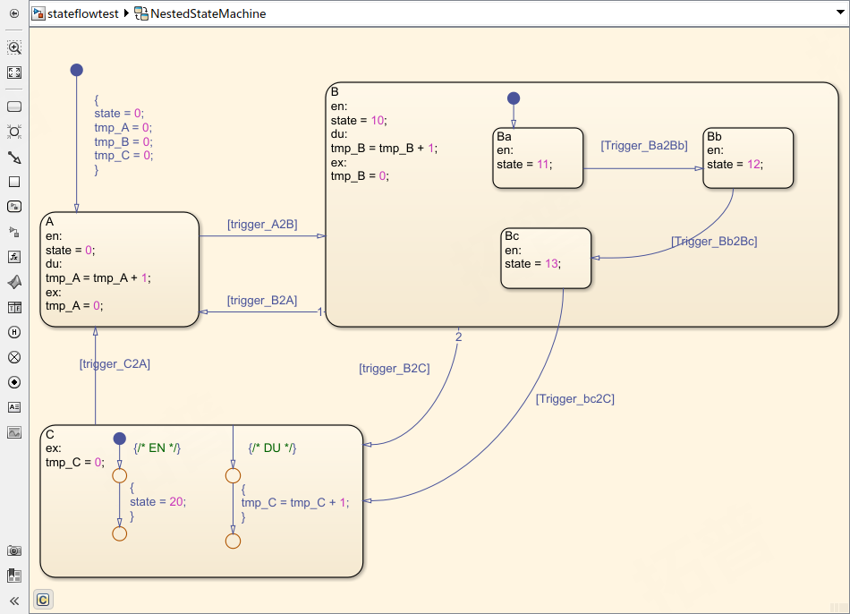
并行状态机
StateFlow允许 '并行' 运行, 共享同样的输入, 输出, 局部变量等
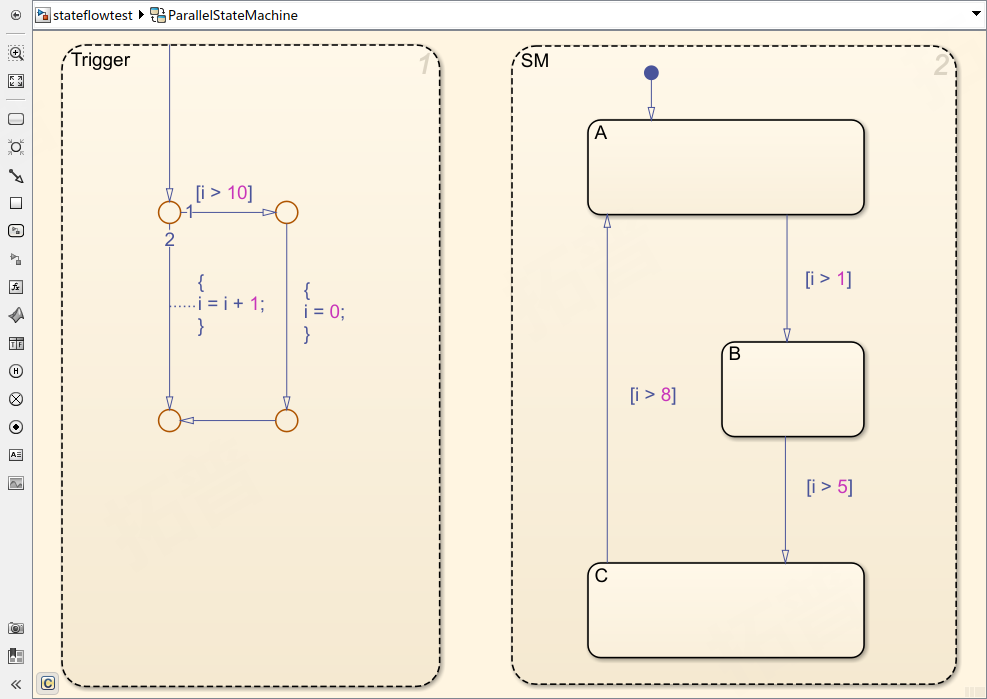